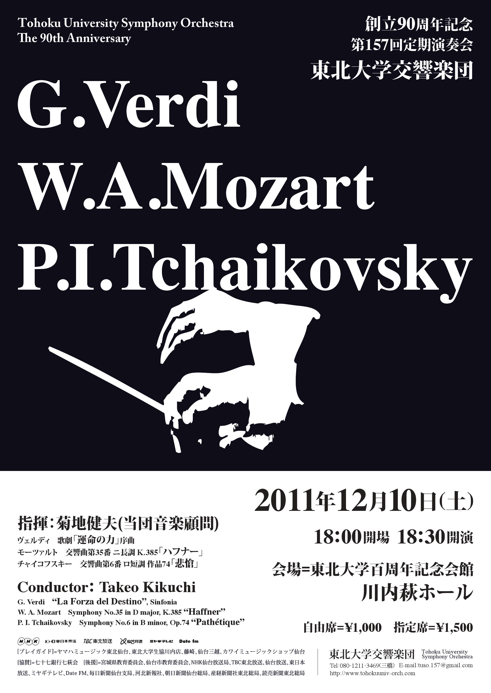

第157回定期演奏会は終了いたしました。ご来場ありがとうございました。
- 指揮
- 菊地 健夫 (当団音楽顧問)
- 日時
- 2011/12/10(土) 開場18:00 開演18:30
- 曲目
-
歌劇｢運命の力｣序曲 ヴェルディ G.Verdi
交響曲第35番 二長調 K.385｢ハフナー｣ モーツァルト W.A.Mozart
交響曲第６番 ロ短調 作品74｢悲愴｣ チャイコフスキー P.I.Tchaikovsky
- 会場
-
東北大学百周年記念会館 川内萩ホール
会場へのアクセスはこちら - 入場料
- 自由席 1,000円 指定席 1,500円
- プレイガイド （販売終了）
- (株)ヤマハミュージックリテイリング仙台店、東北大学生協川内店、藤崎、(株)仙台三越、 カワイミュージックショップ仙台、東京エレクトロンホール宮城(宮城県民会館)
- お問い合わせ
-
実行委員長 三橋
tuso.157@gmail.com

(C) Copyright 東北大学交響楽団／東北大学学友会交響楽部 2015 All rights reserved.